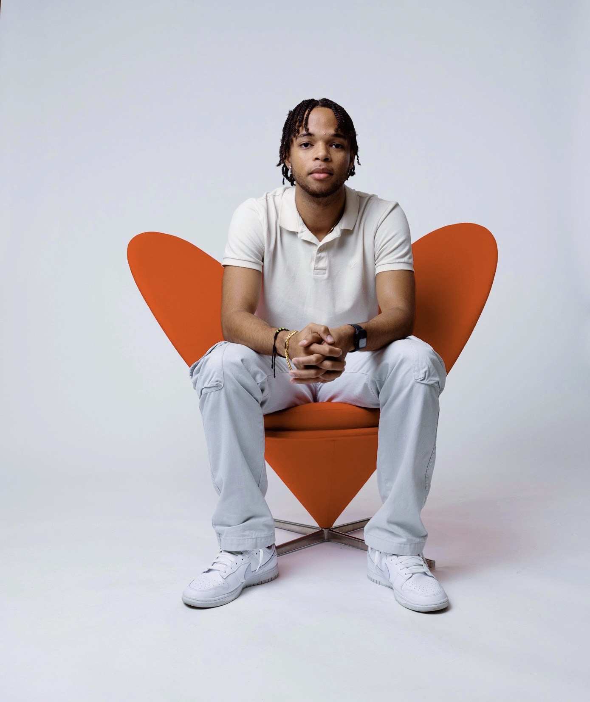

SFS Cybercorps Scholar | Cybersecurity | Network Automation
Hi, I'm André, a senior and SFS Cybercorps Scholar at NJIT. I'm pursuing a BS/MS in IT with a focus on Network Security and IT Administration. My expertise bridges cybersecurity and web development, creating innovative solutions. Welcome to my portfolio!
Used Python, FastAPI, and Postman to create an API that used LDAP and Bearer Token Authentication for enhanced security. The API automated specific tasks: retrieving case attachments & details, creating new cases, updating existing cases, and uploading log files to cases.
Used Python, Flask, Javascript, Heidi SQL, CSS, and HTML to create an application where users could securely submit and track requests for automation. The teams could prioritize, and follow through on requests.
Created an e-commerce website with my partner using Next.js. Drafted the design using Figma. This website incorporated the Ruler archetype and used MailChimp API. Used Playwright testing for quality assurance.
Used Docker containers to conduct labs: MitM attacks with Scapy, Exploiting log4j, Malicious Containers, and Scanning with nmap. Used AnyRun to conduct interactive malware analysis.
Created a simple e-commerce site for users. Administrators or store owners could manage inventory and users could manage their carts and place orders.
Created a global chatroom where users could communicate in the chatroom using Java sockets. New joiners could not see the previous chat history and users could break out into separate rooms.
Created using C# programming in the Unity content creation engine.